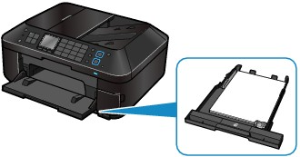
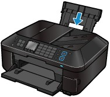

Loading Paper in the Rear Tray
Loading Paper in the Rear Tray
 Paper Sources to Load Paper
Paper Sources to Load PaperThe machine has two paper sources to feed paper; Cassette and Rear Tray.
You can load paper in either one of the paper sources, depending on the page size and media type of paper. Paper is fed from the Cassette or Rear Tray depending on the selection of the page size or media type.
 Note Note
For details on how to load paper in each paper source, see Loading Paper in the Cassette or Loading Paper in the Rear Tray.
|
 Loading Plain Paper in the Cassette
Loading Plain Paper in the CassetteWhen you use A4, B5, A5, or Letter-sized plain paper, load it in the Cassette.
The machine feeds paper from the Cassette automatically by selecting plain paper (A4, B5, A5, or Letter size) in the print settings with the Operation Panel or the printer driver when printing.
For details on how to change the paper source setting, refer to the on-screen manual: Advanced Guide.

Loading Photo Paper / Envelopes in the Rear TrayWhen you use photo paper, load it in the Rear Tray.
The machine feeds paper from the Rear Tray automatically by selecting the media types other than plain paper, such as photo paper, in the print settings with the Operation Panel or the printer driver when printing.
When you use plain paper other than A4, B5, A5, or Letter size, also load it in the Rear Tray.
